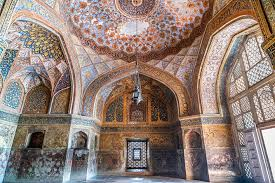

Sikandra
Connectivity
- By Bus :
- Nearest Bus Stand: ISBT Transport Nagar is the primary bus terminal in Agra.
- Distance to Sikandra: Approximately 15 minutes by auto-rickshaw or cab.
- Bus Services: Regular buses from cities like Delhi, Mathura, and Jaipur arrive at ISBT.
- By Train :
- Nearest Railway Stations: The closest major railway stations to Sikandra are Raja Ki Mandi and Idgah Agra Junction.
- Distance to Sikandra:
- From Raja Ki Mandi: Approximately 20 minutes by auto-rickshaw or cab.
- From Idgah Agra Junction: Around 15 minutes by auto-rickshaw or cab.
- Train Services: Trains from major cities like Delhi, Jaipur, and Lucknow connect to these stations.

Ticket Price
- For Foreign Tourist : ₹310
- For Indian Citizens : ₹30
- For Children (below 15 years): Free entry to both

Rules and Regulations
- Eating, drinking (except water), and smoking are strictly prohibited inside the premises.
- Items not allowed include: arms/ammunition, sharp objects, fire/smoking items, tobacco products, liquor.
- Electronic goods (except camera), mobile chargers, wire, tripods are prohibited.
- Mobile phones should be switched off or put on silent mode
- Photography is not allowed.
- Avoid touching or scratching any surface, walls or marble of the monument.
- Avoid big bags and books inside the monument (they can delay security checks).
Timings
- Daily : 6:00 a.m. to 6:00 p.m.
Short History
- Sikandra was named after the Delhi Sultan Sikandar Lodi, who ruled before the Mughals and first developed this area.
- Emperor Akbar himself chose this site for his tomb and started its construction during his lifetime.
- The work was completed by his son Jahangir, who made some design modifications — especially to the upper structure.
- The tomb blends Islamic, Hindu, Buddhist, and Jain architectural styles — reflecting Akbar’s philosophy of religious tolerance and his idea of “Sulh-i-Kul” (peace for all).
- Made primarily of red sandstone and white marble.
- The structure stands in the middle of a vast charbagh (four-part Persian garden) with fountains, pathways, and gateways.
- The main gateway, called the Buland Darwaza, is richly decorated with marble inlay and geometric patterns.
- Akbar’s actual tomb lies in a simple underground chamber.
- The monument is maintained by the Archaeological Survey of India (ASI) and is part of the UNESCO tentative list for World Heritage Sites.
- The site also contains tombs of Akbar’s daughters, including Princess Shakrul Nissa Begum.